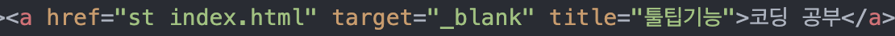

위 strong이라는 걸 HTML에서 문법적으로 태그라고 한다. 앞에 있는 태그를 열리는 태그, 뒤에 있는 태그는 /를 붙이고 닫히는 태그라고 구분한다.
웹은 W3C(The World Wide Web Consortium)라는 국제민간표준화기구에 소속된 여러 기업과 기관을 통해 만들어지고 브라우저 업체들은 같은 태그를 잘 구현하기 위해서 경쟁하고 있다. 링크
https://advancedwebranking.com/html/구글에서 수많은 웹페이지를 분석한 결과를 정리 정돈한 사이트. 태그의 사용빈도를 볼 수 있다. 현재는 평균 32개의 태그를 사용한다고 나옴.
p태그 & br태그
br = 줄을 바꾸기 위해서 줄을 띄움.p = 단락paragraph을 표현하기 위해서 줄을 띄움.
p태그는 원하는만큼 간격을 조절할 수 없어 br태그를 선호할 수 있지만 CSS를 이용하면 디자인을 자유롭게 변경할 수 있기 때문에 br보다 p가 더 좋은 선택이다. p의 빈도수 84.3%, br의 빈도수 69.9%.
닫지 않는 태그가 있다
br 밑줄, img, input, hr, meta 등.속성 attribute
태그 이름만으로는 정보가 부족해서 새로운 문법을 도입한 것이 속성(attribute)이다. 이미지를 표시하는 img태그(89.2%의 사용률)에 source를 뜻하는 src라는 속성을 통해서 이미지를 불러올 수 있게 했다. img src="http://이미지 주소" 인터넷 주소를 연결하거나 웹페이지 파일과 같은 위치에 파일을 두고 파일 이름만 적어줘도 된다. img src="file.jpg"이미지 크기가 원하는 것과 다르다면 html img size attribute를 검색해봐.
태그 사이에 부모(parent), 자식(child) 관계. 목록(list)태그
태그마다 부모 자식 관계가 꼭 정해진 것은 아니고 상황에 따라 부모 자식이 반대로 쓰일 수 있다. 하지만 고정된 관계인 태그가 있다. 그것은 li태그와 ul태그, ol태그다. 이 태그는 목록을 표시하는 태그다.- li, List
- ul, Unorderd list. li의 부모 태그. 다른 목록과 경계를 만듬.
- ol, Ordered list. li의 부모 태그. ul의 기능+목차에서 앞에 번호를 자동으로 매겨준다.
title 태그
웹브라우저의 탭에 나타나는 제목이다. 지정하지 않을 경우 파일이름이 제목으로 나타난다. 검색엔진이 웹페이지를 분석할 때 가장 중요하게 생각하는 태그다.body태그와 head태그
본문은 body, 본문을 설명하는 태그는 head를 사용. 또 이 두 가지를 감싸는 하나의 태그 html를 두기로 했다. 또 이 웹페이지가 HTML로 만들어졌다는 걸 표현하기 위해 문서의 시작에 아래와 같은 코드를 추가한다. !doctype html태그의 제왕, hyperText
이 태그의 이름은 anchoor의 첫글자 a다. 링크 기능이다. href는 Hyper Text Reference의 약자다. 뒤에 target="_blank"를 붙이면 새 창에서 열린다. title은 마우스를 올렸을 때 문자를 나타낸다.